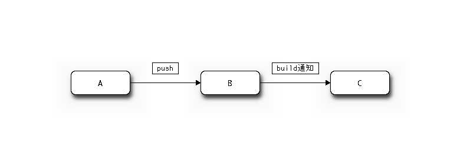
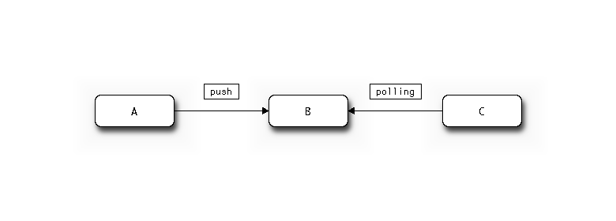

mercurial plugin を導入する
JENKINS_HOME
└── .ssh/id_rsa
└── .hgrc
.hgrcの中身
[ui]
ssh = ssh -C -i path_to_JENKINSHOME/.ssh/id_rsa

| Name | Description |
|---|---|
| A | ローカル（開発環境） |
| B | Bitbucket とか |
| C | Jenkins |
上記のような環境で、JenkinsにBuild通知を行おうとすると下記権限が必要っぽい

github plugin を入れる
sbt plugin を入れる